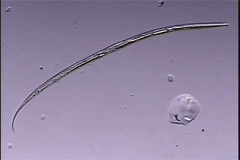

Chronogaster magnifica
from Ivory Coast
Virtual specimen prepared by Melissa Yoder, Luis Mundo and Irma T. De Ley
Click on the appropriate thumbnail image to select the relevant specimen.

Adult Female
copyright 2002